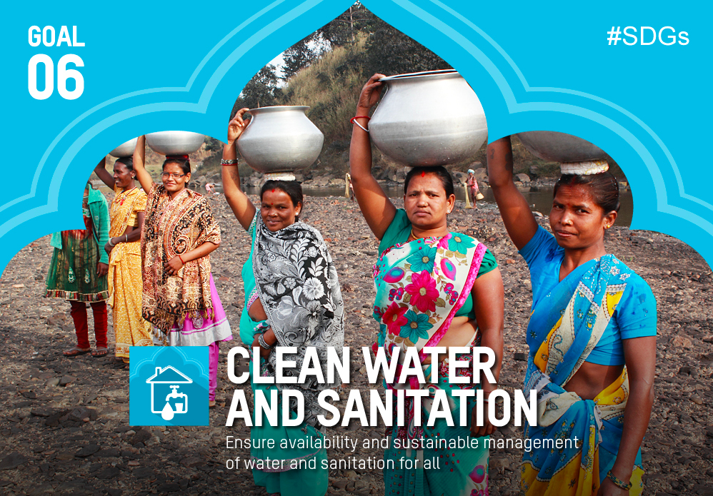

SDG 6 is one of the 17 United Nations sustainability goals
created in order to make our world the best place possible.
SDG 6 refers to securing clean and sustainable water and
sanitation for all. The UN hopes to acomplish the majority
of these goals so as to make the world a healthier and more
peaceful place by the year 2030. The UN goals are ranked
from least to most important so SDG 6 is obviously of high
importance to the world community. SDG 6 will be rectified
by ensuring that people in low infrustructure areas have both
safe means to access water as well as proper areas to sanitize
and relieve themselves. This task is of the utmost importance
and every person supporting the cause is extremely significant.
SDG 6 is of great significance to the world community.
Around the world, millions of people lack access to safely
managed water and sanitation services, along with
hand-washing facilities at home. This increases chances
of catching water born disease and in areas where medication
is scarce this can be deadly. As you can see, supporting SDG 6
is life or death for millions of people around the globe and
without your support, aiding people without clean water
and sanitation will take far longer. Along with this,
in 2017, 3 billion people lacked soap and water in their homes,
making it difficult to stay cleanly and maintain positive hygene.
Without help from SDG 6, more in more people will fall ill
with diseases which could have been prevented by stronger
hygene. As you can see, there are a number of reasons
why you should support the cause of SDG 6.
There are a number of ways that you can help the SDG 6
cause. Firstly, the United Nations outlines a number of
activites that you can participate in to improve the
livelyhoods of those without clean water and proper
sanitation. These include forums, agenda reviews,
fundraisers and international celebratoins. Along with this,
you can donate to a number of charities that work in the field
of clean water and sanitation such as Water for Good or
Generosity.Org. As you can see, there are a number of ways
you can be active in the fight for SDG 6.
2.2 Billion people lack safely managed drinking water
4.2 people lack safely managed sanitation.
3 Billion people lack handwashing facilities at home.
2 out of 5 health clinics world wide do not have soap, water or
hand sanitizer.
2 Billion people live in countries under high water stress.
Water scarcity could displace 700 million people by 2030.
|  |